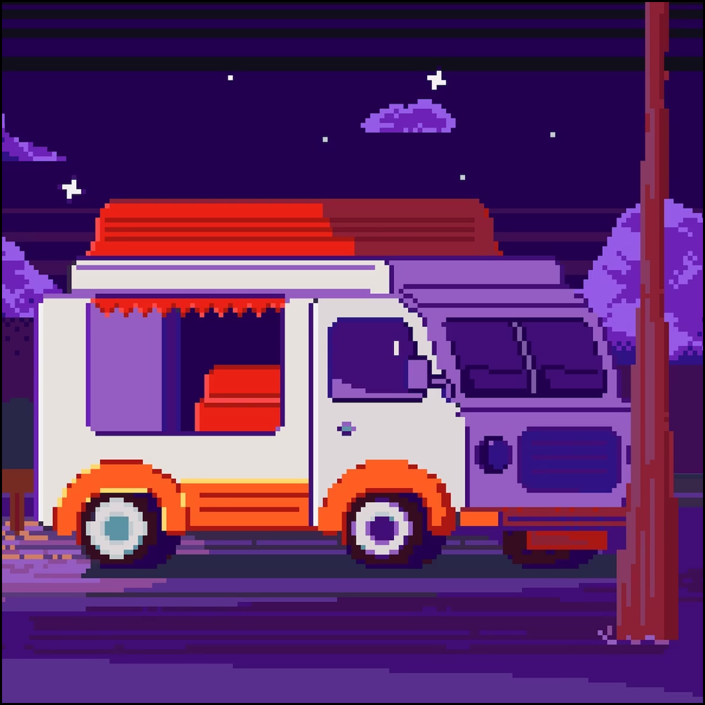

Фритек и нулевой спринт: Подготовка к работе
Это было самое начало пути. На этом этапе важно было проникнуться основами и настроиться на учёбу. И, возможно, подумать, как новые знания могут повлиять на ваше будущее.
Место для ваших воспоминаний о начале обучения.